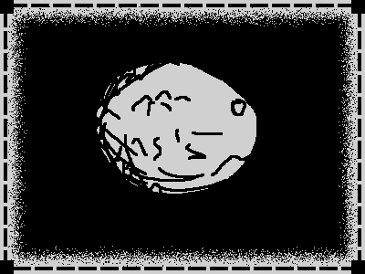

Apfel Project
World Lore

Like every other planet in the universe, Ceres, name given to this planet that for some odd reason always ends up being the same name every dweller generation chooses: was created from some kind of big bang.
But unlike other habitable planets, this one wasn’t, its core was way too unstable and there was just no way for life to emerge on this planet.
Next page ->